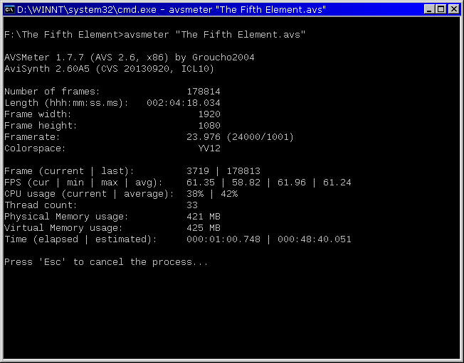

AVSMeter is a CLI (command line interface) tool that "runs" an
Avisynth script with virtually no overhead, displays clip info, CPU
and memory usage and the minimum, maximum and average frames
processed per second. It measures how fast Avisynth can serve frames
to a client application (x264, for example) and comes in handy when
testing filters/plugins to evaluate their performance and memory
requirements.

Usage:
Usage: AVSMeter script.avs [-l] [-i]
The "-l" switch creates a log file ("script.avs.log") which contains
information about the Avisynth version used, clip info, runtime
info, a table with statistics for each frame interval and a copy of
the script itself.
The "-i" switch displays/logs just the clip info.
AVSMeter checks if a settings file ("AVSMeter.ini") exists in the
directory from where it is started. If not, it will be created with
the default settings.
Supported settings for the INI file (default values in red):
"CreateLog" (0 or 1):
Determines if a log will be created or not. Note: The command line
switch "-log" overrides the ("0") INI setting.
"PauseBeforeExit" (0 or 1):
If set to "1", pauses the program at the end and returns to the
console prompt only after pressing "ESC".
"FrameRange" (first,last):
Specify the range of frames to be processed. "FrameRange=0,-1" processes all frames in the
script. "FrameRange=1500,1999" processes 500 frames starting at
frame 1500. The smallest supported interval depends on how many
frames/second are processed. The script has to run for at least ~200
ms, otherwise no data is captured.
"InvokeDistributor" (0 or 1):
For Avisynth MT users: If set to "1", adds the "Distributor" call
internally if the script uses MT Mode 1~4 (via "SetMTMode"). Note:
Setting this value to "1" and adding the Distributor call in
the script will unnecessarily increase the number of threads which
leads to increased memory usage and suboptimal performance. The
"InvokeDistributor" setting is ignored when using non-MT versions of
Avisynth.
"AllowOnlyOneInstance" (0 or 1):
When set to "1", only one instance of AVSMeter can run at the same
time.
There are 3 versions:
[AVS2.5_x86] - For Avisynth 2.5x
[AVS2.6_x86] - For Avisynth 2.6 Alpha4 and above (including SEt's MT
version) and Avisynth+
[AVS2.6_x64] - For Avisynth+ 64 Bit